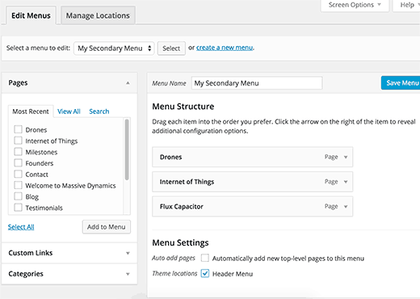

The visual appearance of your WordPress site is controlled by a theme. WordPress themes are professionally designed templates that you can install on your website to change its appearance. There are free and premium WordPress themes.
As with every web design project, a theme is more than colour and layout. Good themes improve users' engagement with your website's content in addition to looking good.
WordPress themes are of two main types:
As with plugins, you can add a theme by using the inbuilt WordPress installer. Here are the steps:
At any time, you can click the Plugins option in the vertical left menu to view active plugins, and to deactivate or delete plugins.
You can replace your current theme with another at any stage.
Your WordPress posts and pages will be unaffected by the theme switch. However, depending on how your old themes displayed posts, images, attachments, and pages, they might look a little different on your new theme.
All your media uploads will be unaffected by the theme switch. However, many WordPress themes come with their own image sizes for featured images and thumbnails. You may need to regenerate image sizes after switching the theme.
The default WordPress settings located under the Settings menu will also remain unaffected.
The following items will change, however.
WordPress comes with a built-in navigation menu system. Each WordPress theme defines theme locations where menus are displayed. That's why when you switch your WordPress theme, there will be new menu locations.
The menu you previously assigned to a theme location will need to be reassigned. Simply go to Appearance -> Menus. Next, select the menu you want to use and then check the theme location where you want menu to be displayed.
Widgets allow you to easily place different elements in your WordPress theme's sidebars. When you change your WordPress theme, similar to menus those sidebars are replaced by the new theme's sidebars. This will automatically deactivate your active widgets.
Note that some themes will automatically show default WordPress widgets. But any widgets with customizations will be placed under the inactive widgets section. You can still use those widgets and add them back to your sidebars.
Each WordPress themes come with different customization options. In fact, there are some WordPress themes that come with tons of customization options controlled by their own theme options panel.
These settings may include your site's logo, favicon, header, background image, etc. All of these settings will disappear when you switch to your new WordPress theme.
If made a list of changes, then you can probably try setting those things up in your new theme. However, it is possible that your new theme may not have all the features that your previous theme had OR that it may have more features than your previous theme.
In most cases, these settings do not affect your site's performance on search engines. The impact of losing those settings will not be that significant.
Return to Contents.